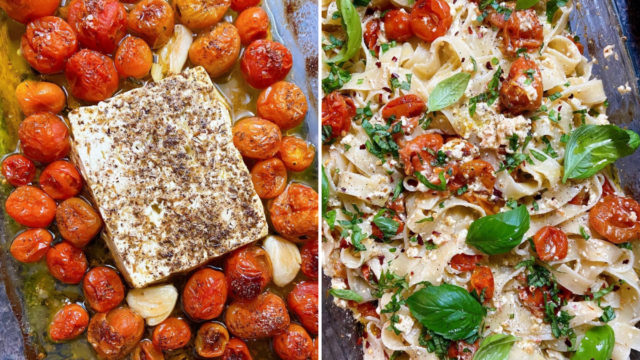

TikTok feta pasta: Why a simple recipe has gone viral – and how to make it
The extremely simple pasta recipe has been all over TikTok and Instagram during the early part of 2021
This feta pasta recipe has gone viral on TikTok (Photo: TikTok)
Reporter
March 8, 2021 6:28 pm
TikTok might be best known for its dance routines, but it has also become a great source of recipes.
You may remember the dalgona coffee, which went viral during the first lockdown, the cloud bread and the outrageously sweet mini doughnut cereal.
The latest viral recipe might be the most hyped of them all – and also the simplest. It is a baked feta and tomato pasta dish which takes five minutes to prepare, if that.
How to make the TikTok feta pasta
This recipe could not be easier, you don’t even need to be able to cook to put it together.
It simply requires you to bake a block of feta with a bunch of cherry tomatoes before mixing it into pasta.
Here’s what you’ll need, and how to do it.
@grilledcheesesocial Baked feta pasta viral recipe! Inspired by #uunifeta via @liemessa & @tiiupiret #learnontiktok #foodtiktok #foodie
♬ She Share Story (for Vlog) - 山口夕依
Ingredients
To serve four:
- 450g dried spaghetti or pasta of your choice
- 1 block of feta
- 500g cherry tomatoes
- 60ml olive oil
- 1/2 red chilli or chilli flakes
- 4 garlic cloves
- Salt and pepper
- Fresh basil
Method
- Preheat the oven to 200ºC/180ºC for fan oven
- Add splash of olive oil to a large ovenproof pan or baking dish
- Peel and crush the garlic
- Add the tomatoes, garlic and chilli to the pan, season with salt and pepper and toss to combine
- Place the block of feta into the middle of the tomatoes
- Drizzle more olive oil over the top
- Bake for 40-45 minutes until tomatoes are bursting and feta is golden on top
- Meanwhile, cook pasta to packet instructions in pan of boiling salt water
- Reserve 120ml pasta water before draining
- Add pasta and pasta water to pan with tomatoes and feta and mix it all in
- Garnish with basil
How the recipe went viral
The recipe was invented by Finnish food artist Jenni Häyrinen back in 2019. It quickly became a viral hit in her native country, with people cooking and sharing the recipe under the hashtag #uunifetapasta. The recipe on her blog has more than two million views, Ms Häyrinen has said.
The following year the recipe was discovered by American food blogger MacKenzie Smith, who has more than 100,000 followers on Instagram.
The recipe started spreading all over the world, first on Instagram, and then on TikTok, which is where it really started to explode.
Ms Häyrinen said in a recent blog post: “The #uunifetapasta fever is global and I’m so happy for it bringing joy to peoples lives in these times.
“If you share my baked feta pasta recipe on TikTok or Instagram, I would be over the moon if you can credit the original creator of the viral recipe. My profile is @liemessa in both.”